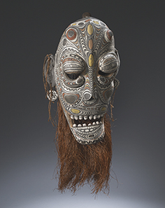

PLAN YOUR VISIT
Just 20 minutes from downtown Vancouver and the Vancouver International Airport, the UBC Museum of Anthropology houses one of the world’s finest displays of Northwest Coast First Nations art in a spectacular Arthur Erickson designed building overlooking the mountains and ocean. It also features extensive collections from around the world as well as a wide range of temporary exhibitions, guided tours, and other public events.
HOURS
Museum and Shop Hours Daily: 10 am – 5 pmThursday: 10 am – 9 pm
Closed Mondays from Oct 15 – May 15
Café Hours
Daily: 10 am – 4:30 pmMondays: 10:30 am – 2:30 pm
Holidays: Closed December 24–26, Jan 1-2
Holiday Hours
December 24: 10 am – 2:30 pmDecember 25: Closed
December 26: Closed
December 27: 10 am – 5:00 pm
December 28: 10 am – 5:00 pm
December 29: 10 am – 9:00 pm
December 30: 10 am – 5:00 pm
December 31: 10 am – 2:30 pm
January 1: 10 am – 5 pm
January 2: Closed
DIRECTIONS
MOA is located on the Campus of the University of British Columbia, 20 minutes from Downtown Vancouver.
EXHIBITIONS
In the Footprint of the Crocodile Man:Contemporary Art of the Sepik River, Papua New Guinea
The Sepik River of Papua New Guinea is one of the largest river systems in the world, extraordinarily beautiful, but seldom visited. It is here that the Iatmul people, who live along its banks, have created internationally renowned works of art primarily inspired by stories of the majestic crocodile as the primordial creator.This unique exhibition will showcase the most comprehensive collection of contemporary Sepik art in North America for the first time. In addition to highlighting the exquisite carvings of Papua New Guinea’s latmul people, the exhibition will delve into their economic, cultural, and spiritual connections to the river system, rawing urgent attention to the logging and mining operations that pose environmental threats to the region.